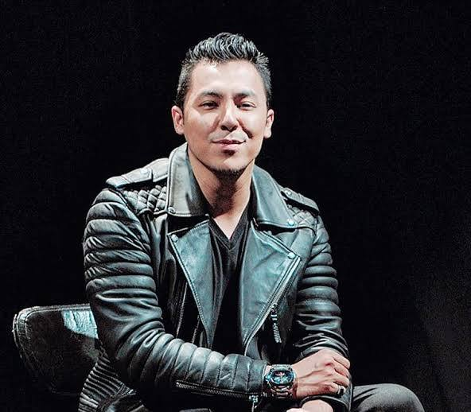

MALAYSIAN FILMS NEWS
By F&N Productions
Mat Kilau News
Title description, July 25, 2020
KUALA LUMPUR: Director Syamsul Yusof admitted that the film Mat Kilau: Rise of a Hero is not perfect even though it has been at the top of the box office charts in Malaysia for five weeks. But at the same time, Syamsul thinks that laws and regulations in filmmaking should be seen from a subjective point of view because of the nature of art itself.

#Showbiz: 'Imaginur' to represent Malaysia at New York Asian Film Festival
KUALA LUMPUR: Award-winning local filmmaker Nik Amir Mustapha's latest work Imaginur is one of eight Asian films that have been selected to compete for the Uncaged Award for Best Feature Film at the New York Asian Film Festival (NYAFF) 2022 in the US next month.
The science fiction film that has yet to be screened in Malaysia will be competing against #LookAtMe (Singapore), Angry Son (Japan), One And Four (China), Perhaps Love (South Korea), Reclaim (Taiwan), The Sales Girl (Mongolia) and Fast & Feel Love (Thailand).
Imaginur which stars Beto Kusyairy and Diana Danielle is set to make its world premiere at the Walter Reade Theater, Film at Lincoln Center in New York on July 23July 8, 2022
F&N Productions Team
We, Fitri and Nikman, extend our sincerest gratitude to everyone who has supported us in the production team. Your hard work, dedication and commitment have been instrumental in ensuring our success. Thank you for going above and beyond to bring our vision to life. We truly appreciate each and every one of you.
Popular Actor/Actress
-

Mohd Syamsul Mohd Yusof
Malaysian actor, film director, writer, producer and singer. He is the son of producer and director Yusof Haslam. He is the youngest director to win the Malaysian Film Festival for Best Director award, doing so at the age of 25
-
 Fattah Amin
Fattah Amin
Abdul Fattah bin Mohd Amin is a Malaysian actor and singer. He is known for playing as Adrian, the main character in the drama Playboy Itu Suami Aku. After his debut performance was criticized for lack of inventory as an actor, Fattah waited for two years to prove himself -
 Michelle Yeoh
Michelle Yeoh
Abdul Fattah bin Mohd Amin is a Malaysian actor and singer. He is known for playing as Adrian, the main character in the drama Playboy Itu Suami Aku. After his debut performance was criticized for lack of inventory as an actor, Fattah waited for two years to prove himself
Tags
Horror Comedy Action Adventure Sci-fi Romance Survival Kids Family News Musical Animations Sports Games